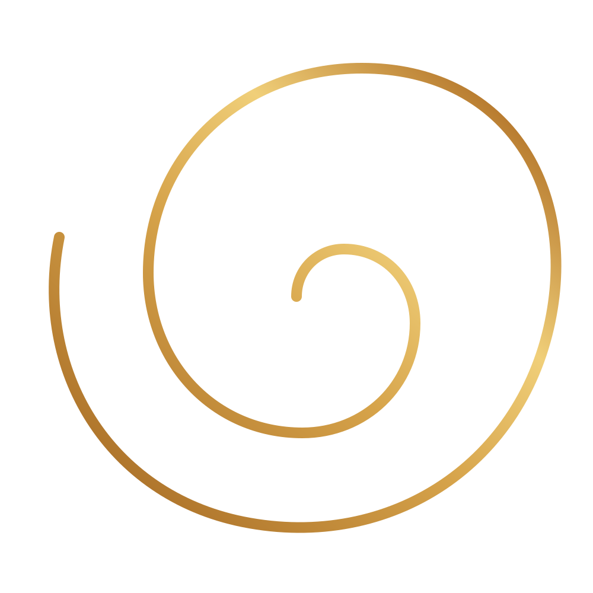
Reconexión ConscienteEl conocimiento que buscas ya está en ti.
Explora tu camino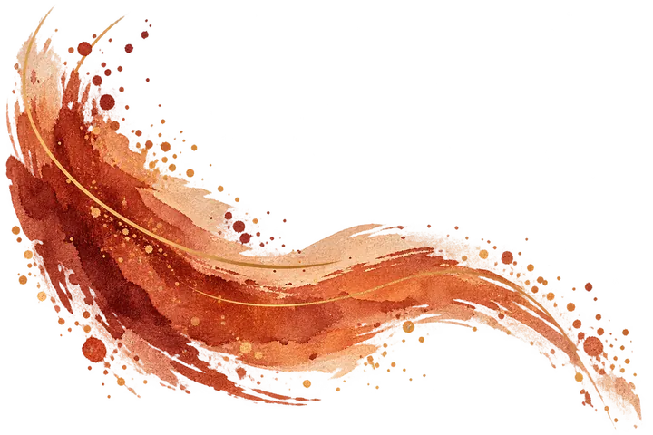
El conocimiento que buscas ya está en ti.
Tres caminos para volver a mirarte desde otro lugar.
Numerología, tarot y encuentros para reconocer lo que quizá siempre estuvo ahí.
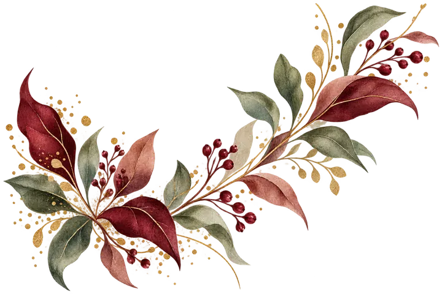
Experiencias
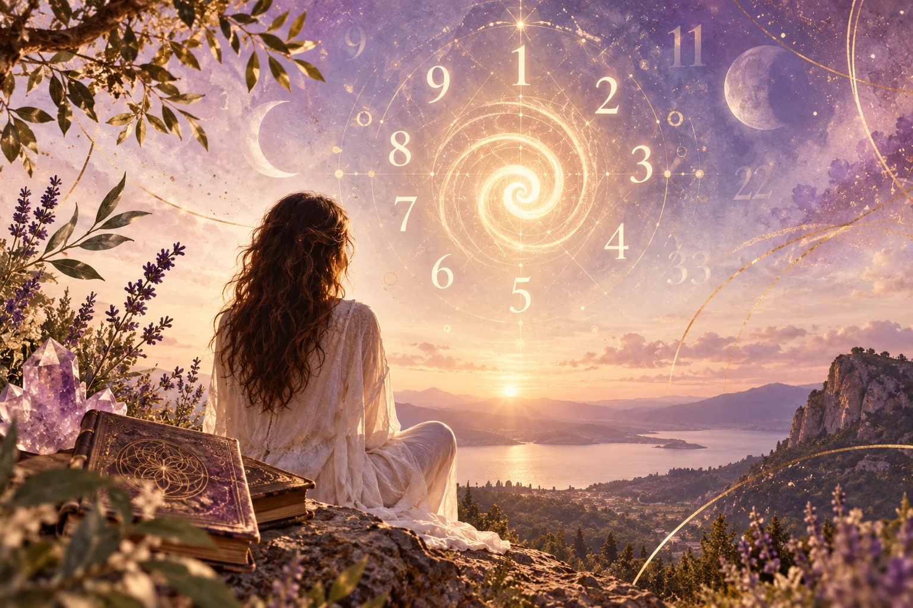
Explórate
Un mapa para reconocer ciclos, tensiones y cualidades que ya habitan en ti.
Descubre tu mapa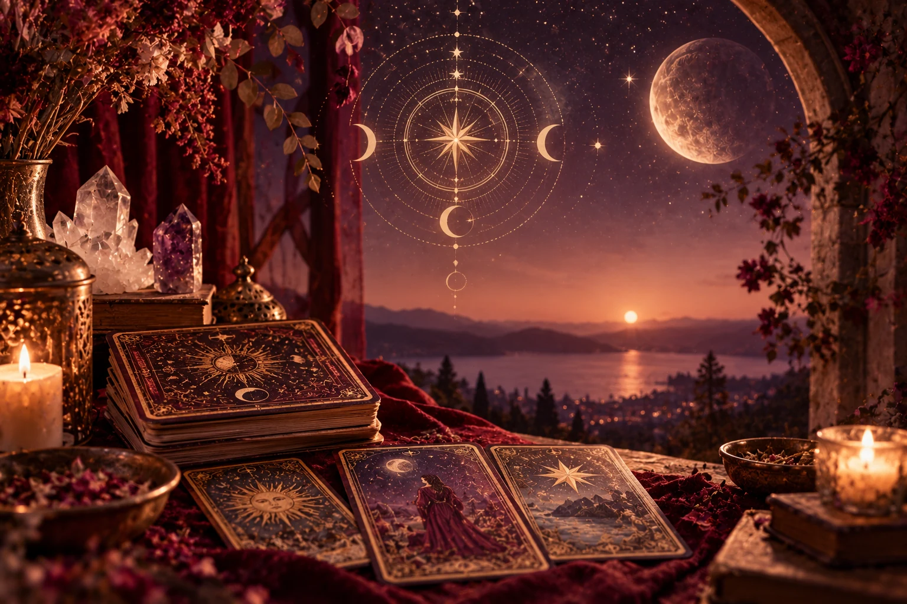
Escúchate
Una lectura simbólica para poner palabras a lo que ya se está moviendo.
Escucha lo que emerge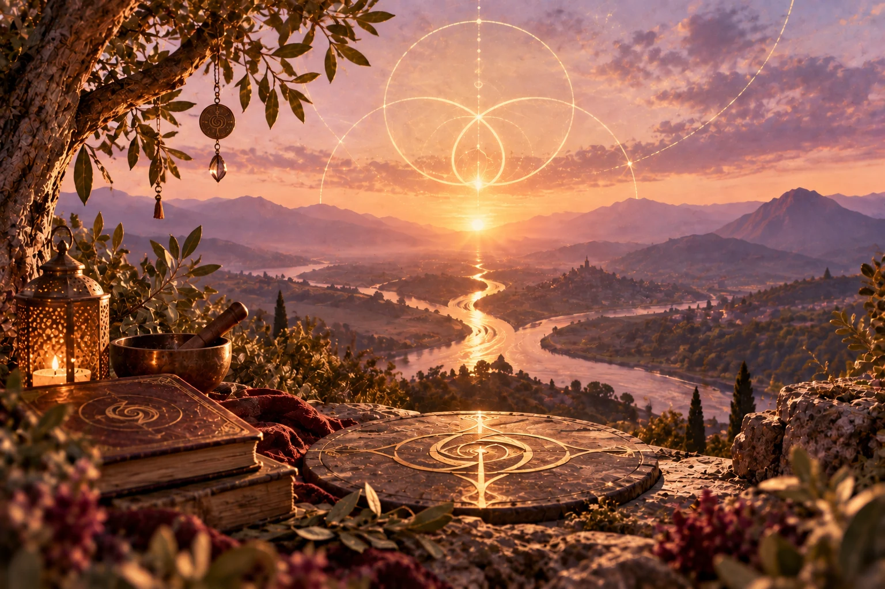
Encuéntrate
Un espacio para reunir caminos y volver a un centro más consciente.
Vive la experienciaNo hay un destino fijo. Hay una mirada más consciente.Reconexión Consciente
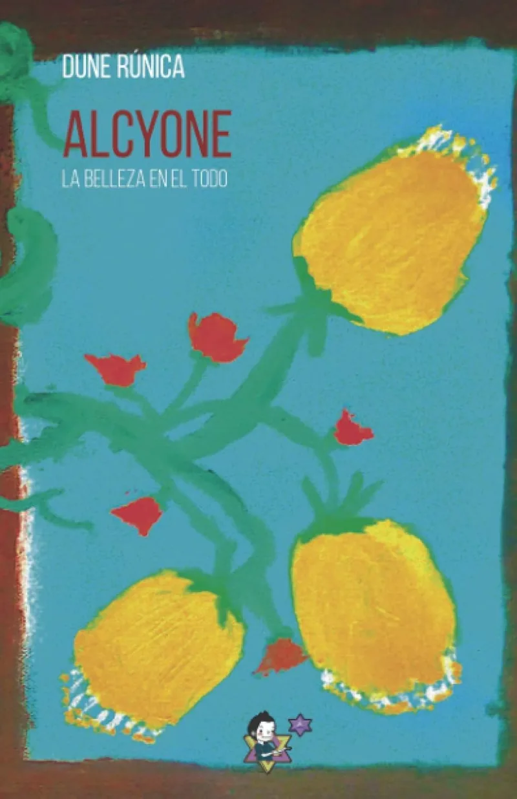
Libro
La belleza en el todo
Alcyone propone una mirada a la Trinidad como estructura energética de creación, alejada de una interpretación religiosa. Padre, Madre e Hijo representan tres fuerzas que actúan también en nuestro interior: el Pensamiento y la Voluntad, el Amor y la Aceptación, y la Sabiduría que nace de integrar ambos. A través de ellas, el libro explora cómo creamos nuestra realidad y cómo nuestras experiencias, incluso aquellas que inicialmente rechazamos, forman parte de un proceso de aprendizaje y crecimiento.
Pero existe un cuarto elemento: el Observador, nuestro verdadero Ser, que transita esas fuerzas sin ser ninguna de ellas y aprende a reconocerlas e integrarlas. Alcyone plantea así un recorrido hacia dentro, donde consciencia, amor, experiencia, causa y efecto se entrelazan para comprender nuestra propia capacidad creadora. Un libro que puede leerse como una obra completa o abrirse en cualquier página, convirtiéndose también en una herramienta personal de reflexión.
Calendario
Cargando próximos encuentros…
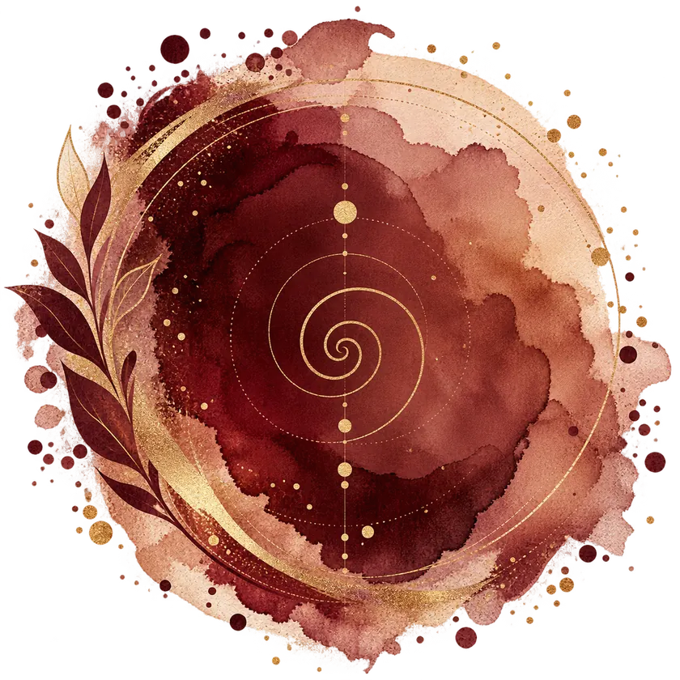
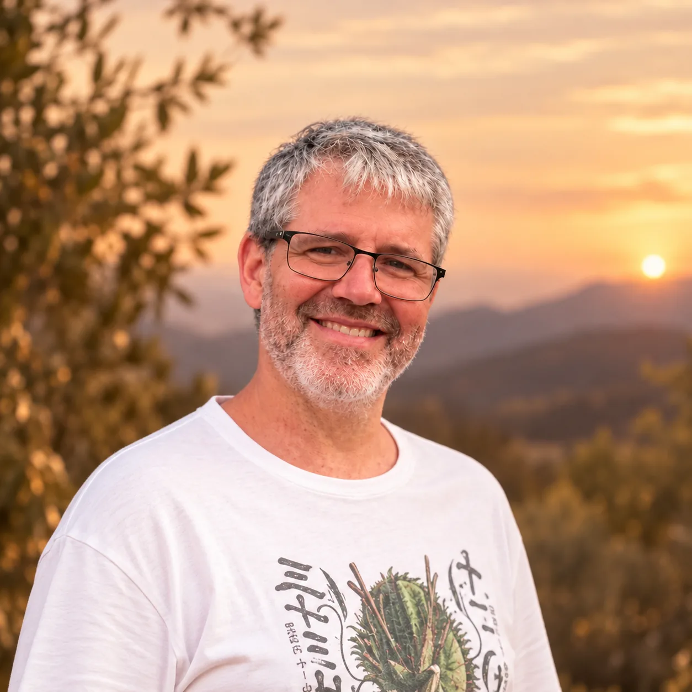
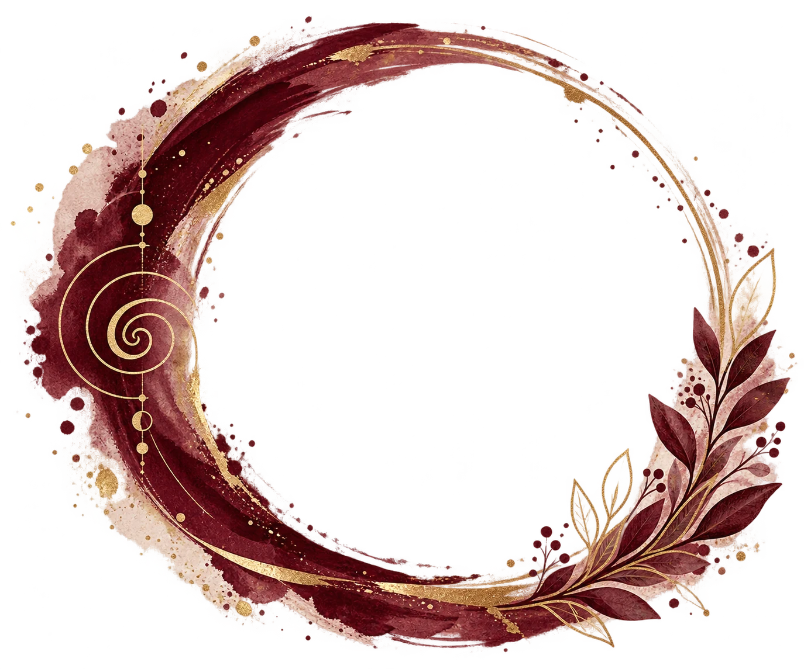
Sobre mí
Desde pequeño he sido una persona curiosa, de las que necesitan mirar un poco más allá y hacerse preguntas. Esa curiosidad me llevó hace años a acercarme al Reiki y, a partir de ahí, se abrió ante mí un mundo que fui explorando a través de las meditaciones grupales y otras formas de entendernos y conocernos mejor.
Con el tiempo, la numerología se convirtió en una de mis principales herramientas de autoconocimiento. Años de estudio, práctica y experiencia me han permitido compartirla también con otras personas, tanto en sesiones como en talleres y ponencias. No busco ofrecer respuestas cerradas, sino abrir preguntas, aportar claridad y crear espacios en los que cada persona pueda descubrir sus propias respuestas.
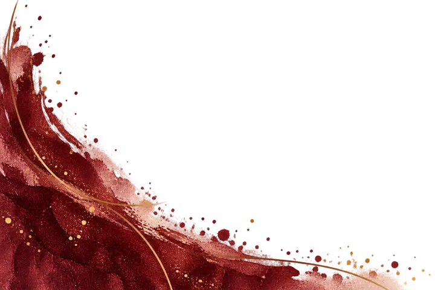
Explora las experiencias o escríbeme. Reconexión Consciente está pensada para acompañarte, no para darte un destino.